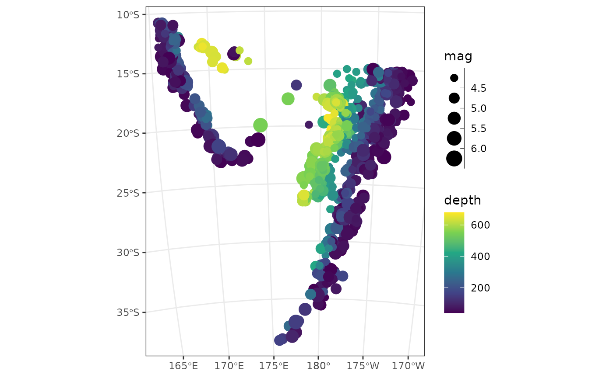
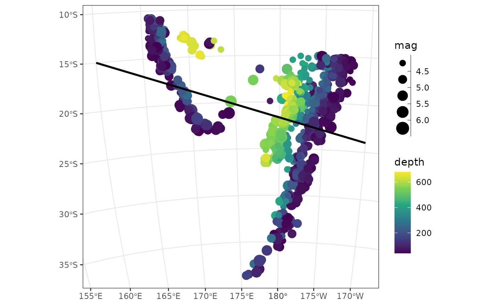
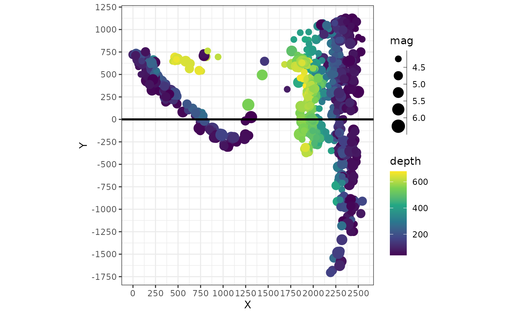
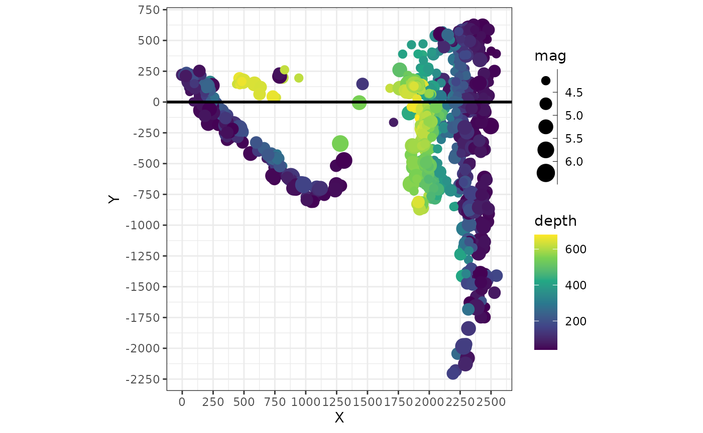
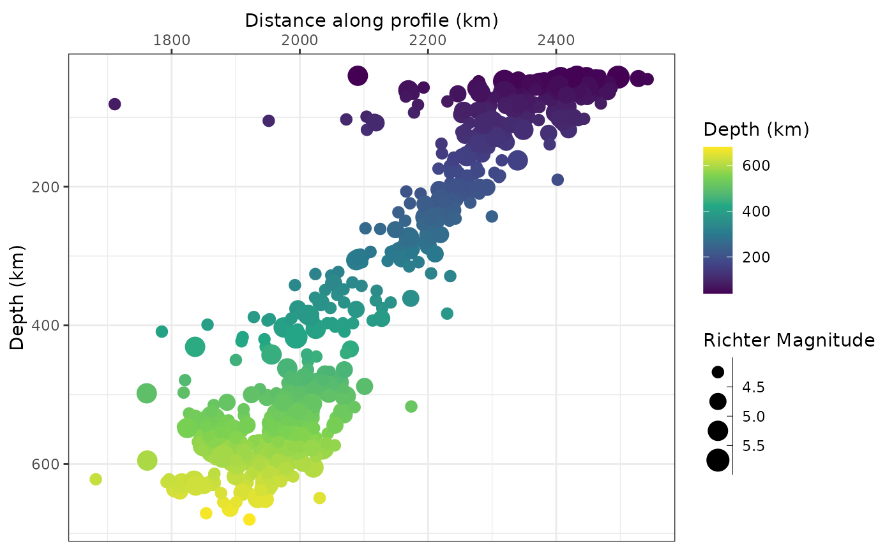
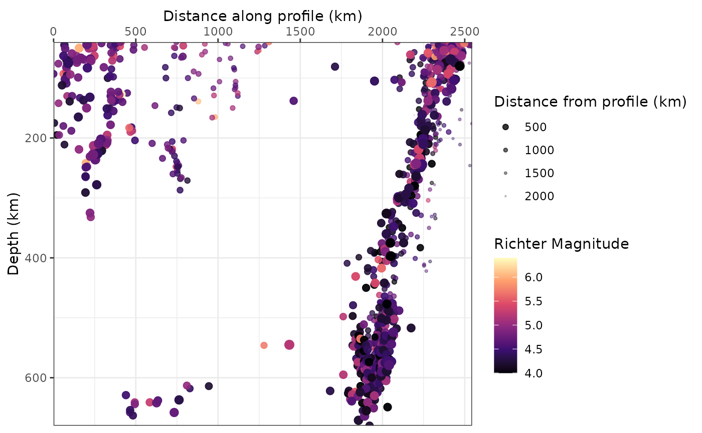

1. Distances Along Oriented Profiles
Tobias Stephan
2025-03-24
Source:vignettes/A_Distances.Rmd
A_Distances.RmdThis tutorial demonstrates how to set up a profile line, measure distances of data locations along and across the line, and plot data values against the profile distance by using the functionality of geoprofiler.
# Load packages required for this tutorial:
library(geoprofiler)
library(ggplot2)
library(units)
library(sf)
library(dplyr)
theme_set(theme_bw())
options(ggplot2.continuous.colour = "viridis")
options(ggplot2.continuous.fill = "viridis")Load example data
You can use any spatial data that can be converted into a
sf object. If you have a shape file for example, simply
import it into R using the function
my_data <- sf::read_sf("path/to/my/file.shp")For this tutorial we use the quakes dataset (from R’s
{datasets} package) giving the locations of 1000 seismic
events of MB > 4.0. The events occurred in a cube near Fiji since
1964.
data("quakes")
crs <- st_crs("EPSG:3460") # coordinate reference system for projection
# Convert to sf object and transform to projected coordinates
quakes_sf <- st_as_sf(quakes, coords = c("long", "lat"), crs = "WGS84") |>
st_transform(crs = crs)
quake_map <- ggplot() +
geom_sf(aes(color = depth, size = mag), data = quakes_sf) +
scale_x_continuous(breaks = seq(-360, 360, 5)) +
scale_size_binned()
quake_map
Transform your dataset into a projected coordinate reference system to deal with units such as m, km, miles etc. Otherwise the units will be in degrees.
Define a profile
There are several ways to define a profile, depending on what is known or what is more relevant.
Profile from two known points
For example, if the profile should be a line connecting two points:
profile_pts <- data.frame(lon = c(160, -170), lat = c(-15, -24)) |>
st_as_sf(coords = c("lon", "lat"), crs = "WGS84") |> # convert to sf object
st_transform(crs = crs) # transform to projected coordinatesCombine the two points to a line and add the profile line to the map:
profile_l <- profile_line(profile_pts)
quake_map +
geom_sf(data = profile_l, lwd = 1)
profile_azimuth(profile_l)
#> 112.3832 [°]
profile_length(profile_l)
#> 3336889 [m]Profile from direction and length from one point
Or, if the orientation of the profile is more relevant, we can define the profile by the direction and distance from one point:
data.frame(lon = 160, lat = 15) |>
st_as_sf(coords = c("lon", "lat"), crs = "WGS84") |>
st_transform(crs = crs) |>
profile_points(profile.azimuth = 112, profile.length = set_units(8000, km))
#> Simple feature collection with 2 features and 0 fields
#> Geometry type: POINT
#> Dimension: XY
#> Bounding box: xmin: -48308.26 ymin: 210366.1 xmax: 2948544 ymax: 7627837
#> Projected CRS: Fiji 1986 / Fiji Map Grid
#> geometry
#> 1 POINT (-48308.26 7627837)
#> 2 POINT (2948544 210366.1)Note that the unit of
profile.lengthdepends on the coordinate reference system and must be in degree for lon-lat cooridnates and m (km, miles, …) if otherwise.
Draw a profile line interactively
You can also just define a profile by clicking or drawing points on the map:
draw_profile(quakes_sf, n = 3)Determine the distances along (and across) the profile
To calculate the distances along and across the profile, we simply transform the data into a coordinate system of the profile line:
quakes_profile <- profile_coords(quakes_sf, profile = profile_l) |>
bind_cols(quakes_sf)
#> Warning: There was 1 warning in `mutate()`.
#> ℹ In argument: `across(.fns = deg2rad)`.
#> Caused by warning:
#> ! Using `across()` without supplying `.cols` was deprecated in dplyr 1.1.0.
#> ℹ Please supply `.cols` instead.The resulting data-frame gives the distance along the profile
(X) and the distance from the profile (Y).
A quick way to visualize the “transformed” data can be achieved by plotting these axes against each other::
quakes_profile |>
# divide by 1000 for km:
mutate(X = X / 1000, Y = Y / 1000) |>
ggplot(aes(X, Y, color = depth, size = mag)) +
geom_point() +
geom_hline(yintercept = 0, lwd = 1) +
scale_size_binned() +
scale_x_continuous(breaks = seq(0, 3000, 250)) +
scale_y_continuous(breaks = seq(-3000, 3000, 250)) +
coord_fixed()
In this plot the profile line is a horizontal line (X=0)
and the start point of the profile has the coordinates X=0
and Y=0.
Shifting the profile line
The location of the profile line can be easily shifted to the desired
spot by adjusting the X and Y values of the
transformed data.
For example, to shift the profile line more to the “North”, we simply subtract the desired shift (to move it “down”, we would need to add the desired number).
quakes_profile_shifted <- quakes_profile |>
mutate(
X = X / 1000, # in km
Y = (Y / 1000) - 500 # in km and shifted by 500 km to the "North"
)
ggplot(quakes_profile_shifted, aes(X, Y, color = depth, size = mag)) +
geom_point() +
geom_hline(yintercept = 0, lwd = 1) +
scale_size_binned() +
scale_x_continuous(breaks = seq(0, 3000, 250)) +
scale_y_continuous(breaks = seq(-3000, 3000, 250)) +
coord_fixed()
Plot data along profile
Finally, we plot our filtered data against the profile:
ggplot(quakes_profile_filtered, aes(X, depth, color = depth, size = mag)) +
geom_point() +
scale_size_binned("Richter Magnitude") +
scale_y_reverse() +
scale_x_continuous(guide = guide_axis(position = "top")) +
labs(x = "Distance along profile (km)", y = "Depth (km)", color = "Depth (km)")
One way to show the distance from the profile in the same plot is by controlling the size (and/or the opacity) of the points. Here I am using the unfiltered data, and show the closest points much larger than the more distant points. This gives a somewhat 3-dimensional look to it:
quakes_profile_shifted |>
arrange(desc(abs(Y))) |> # sort data to have close datapoints in foreground
ggplot(aes(X, depth, color = mag, size = abs(Y), alpha = abs(Y))) +
geom_point() +
scale_color_viridis_c("Richter Magnitude", option = "A") +
scale_size_continuous("Distance from profile (km)", range = c(3, .1)) +
scale_alpha_continuous("Distance from profile (km)", range = c(1, .1)) +
scale_y_reverse() +
scale_x_continuous(guide = guide_axis(position = "top")) +
labs(x = "Distance along profile (km)", y = "Depth (km)") +
coord_cartesian(expand = FALSE)